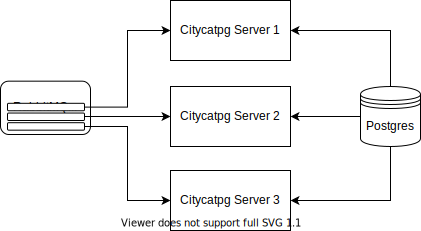
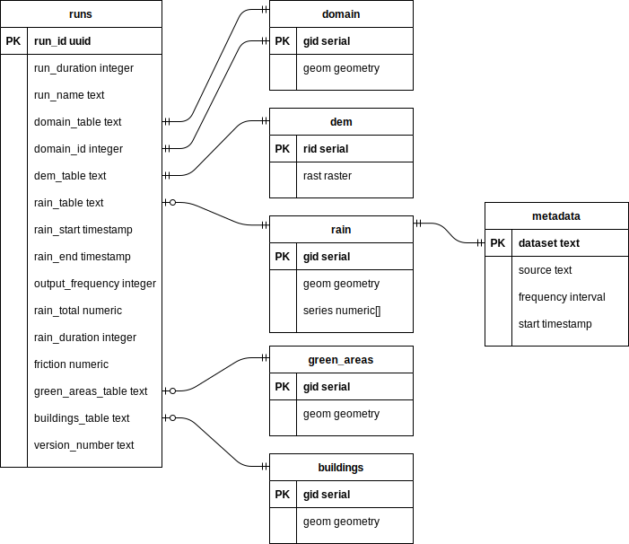

Welcome to Citycatpg’s documentation!¶
Citycatpg creates and runs CityCAT models with data and parameters stored in a PostgreSQL database. RabbitMQ is used to distribute model runs across multiple servers.
Domain boundaries, DEMs, rainfall, green areas and buildings are stored in tables as PostGIS geometries and rasters. Table names associated with each data source are stored with each run configuration. Green areas and buildings table names are optional and a rainfall table is only required if rainfall amount and duration are not specified. The domain table can contain multiple boundaries while each run only uses a single polygon, therefore a domain ID is required. The rainfall table contains time series’ with matching frequencies and start times, stored in a separate metadata table.
citycatpg module¶
-
citycatpg.run_server(con, run_path, out_path, queue='runs', host='localhost', port=5672, close=False, **params)¶ Run a Citycatpg server that listens for messages on the specified queue
- Parameters
con (
connection) – Postgres connectionrun_path (
str) – Directory in which to create the model directoryout_path (
str) – Directory in which to create the output netCDF filequeue (
str) – Name of AQMP queuehost (
str) – Hostname of AQMP serverport (
int) – Port of AQMP serverclose (
bool) – Whether to stop listening when the message count reaches zero**params – Pika connection parameters
-
citycatpg.fetch(con, run_id, run_table='runs')¶ Get a run configuration from postgres
- Parameters
con (
connection) – Postgres connectionrun_id (
str) – Unique identifier for the runrun_table (
str) – Postgres table where the run configuration is stored
- Returns
Configuration used to create and run CityCAT models from postgres
- Return type
-
class
citycatpg.Run(run_duration, srid, resolution, run_id=<factory>, run_table='runs', run_name='', run_start=None, run_end=None, output_frequency=600, domain_table='domain', domain_id=1, dem_table='dem', rain_table=None, rain_start=None, rain_end=None, rain_total=None, rain_duration=None, friction=0.03, green_areas_table=None, buildings_table=None, metadata_table='metadata', version_number=None, model=None)¶ Configuration used to create and run CityCAT models from postgres
Either (rain_table, rain_start and rain_end) or (rain_total and rain_duration) must be given
- Parameters
run_duration (
int) – Number of seconds to run the model forsrid (
int) – Spatial reference identifier of the projectionresolution (
int) – Spatial resolution of the domain in metresrun_table (
str) – Postgres table where the run configuration is storedrun_name (
str) – Name of the runoutput_frequency (
int) – Number of seconds between each output filedomain_table (
str) – The postgres table containing the domain boundarydomain_id (
int) – ID of the domain boundarydem_table (
str) – Postgres table containing the DEMrain_table (
Optional[str]) – Postgres table containing rainfall datarain_start (
Optional[datetime]) – Start date and time of the rainfall eventrain_end (
Optional[datetime]) – End date and time of the rainfall eventrain_total (
Optional[float]) – Total depth of rainfall during the event in millimetresrain_duration (
Optional[int]) – Duration of rainfall event in secondsfriction (
float) – Friction of the domaingreen_areas_table (
Optional[str]) – Postgres table containing green areas polygonsbuildings_table (
Optional[str]) – Postgres table containing building polygonsmetadata_table (
str) – Postgres table containing metadataversion_number (
Optional[str]) – Version of citycatpg used to create the modelmodel (
Optional[Model]) – Citycatio Model object
-
add(con)¶ Insert the configuration into the run_table
- Parameters
con (
connection) – Postgres connection
-
get_model(con, open_boundaries=True)¶ Create Model using data from postgres
- Parameters
con (
connection) – Postgres connectionopen_boundaries (
bool) – Whether to treat domain boundaries as open
- Returns
Citycatio Model object
- Return type
-
get_dem(con)¶ Get DEM data from postgres
- Parameters
con (
connection) – Postgres connection- Returns
DEM file
- Return type
-
get_domain(con)¶ Get domain boundary from postgres
- Parameters
con (
connection) – Postgres connection- Returns
Domain polygon
- Return type
-
get_rainfall(con)¶ Get rainfall data from postgres
- Parameters
con (
connection) – Postgres connection- Returns
Tuple containing rainfall values and optionally geometries
- Return type
Tuple[pandas.DataFrame, Optional[geopandas.GeoSeries]